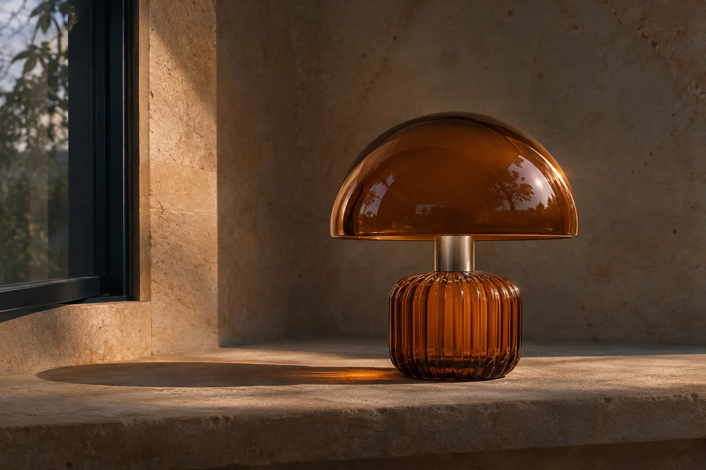
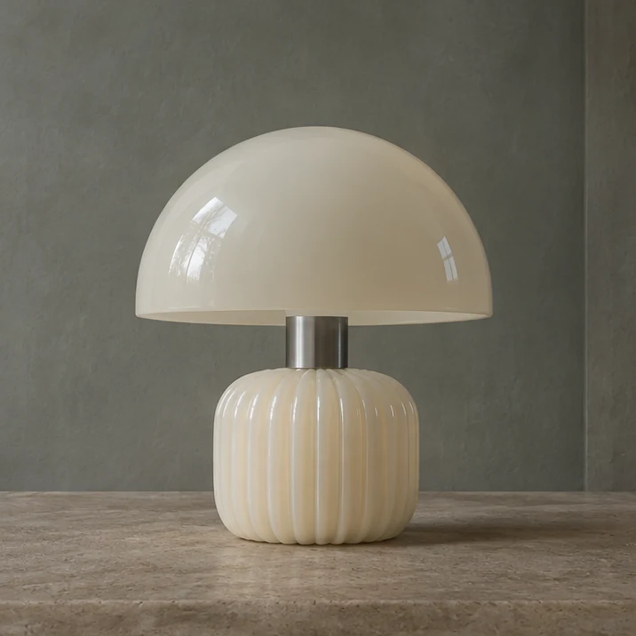
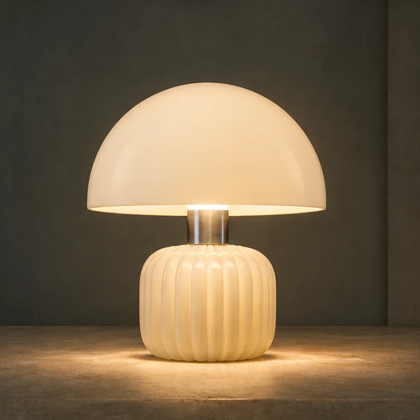
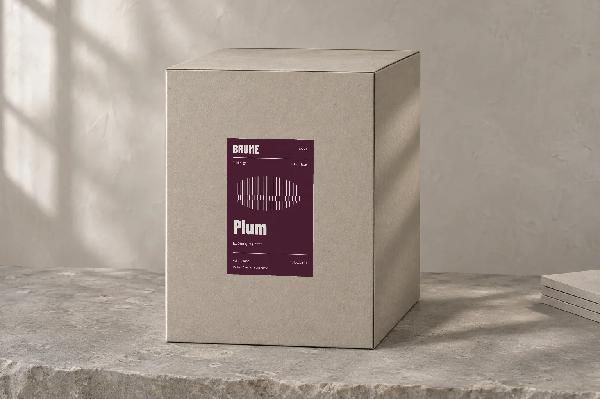

Lighting studio concept
Identity, campaign & digital design

The light register
Where the
light lands.
One glass table lamp. Three finishes. A campaign built around what happens to the room around it.



Design brief
View the earlier directionHow do you choose glass
from a photograph?
The first campaign showed Ivory in daylight and Plum after dark. A shopper could see two moods, but had no way to tell what came from the glass and what came from the room.
Who I designed for
I pictured someone choosing a light for a reading corner. They want to know if a dark shade will still hold its shape at night. That use case guided the concept.
My contribution
I set the brief around one glass form and three moods. I used AI assistance to develop the photographs, campaign artwork and frontend. The editable files show how the direction carries from a poster to a product page.
Photographic direction
From across the room.
Then close enough to touch.
Distance changes the question. The wide frame shows where the light reaches. Close in, a reflection shows exactly where smooth glass gives way to ribs.

 BRUME
BRUMEGraphic identity
A bend in the line.
The lamp’s foot breaks one reflection into many. I turned that observation into a register of upright strokes and shifted a narrow band sideways. It identifies the studio on a box, a poster or a letter, even when the lamp is out of frame.
Condensed display type leaves space for the photograph. A wider sans carries descriptions, and monospaced type keeps edition codes easy to compare.
See the mark, type and paletteCollection experience / UX & UI
Keep the finish.
Change the hour.
Finish and room light are separate choices. Compare Ivory in two conditions, or keep the same morning light while moving between all three finishes.
Try the light study

Interface decision
The camera stays put. A change in reflection is easier to read when the object doesn’t jump between frames.
View phone and desktop layoutsEmail marketing
Three letters from
the studio.
The launch gives the reader one object to remember. The second letter teaches them to read the glass. The third helps them choose a finish. Headlines, descriptions and calls to action stay readable when images are hidden.
Open the email design proofs
Print & packaging
Find the finish
on the shelf.
The edition name and code have fixed positions on each label. The drawing of the carton shows how the information moves over the fold. You can inspect the flat artwork alongside the showroom and paper mockups.
Open print and packagingReflection
What I’d test next.
The redesign gives someone a way to compare three finishes under the same light. I’d watch whether a first-time visitor can compare Ivory and Plum at dusk, then describe which detail helped them decide. A physical lamp would be necessary to check the simulated light and reflections.
Read the design decisions
Campaign & social
An image for the wall.
A sequence for the hand.
A launch poster has one glance to establish the silhouette. A carousel can spend a whole frame on the foot of the lamp. I changed the crop, scale and copy to suit each encounter.